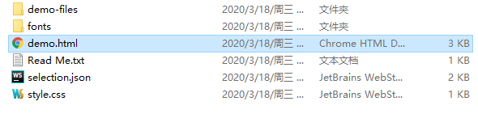

WebQJC
我与Web前端仔的相识人生
前端引入icon的方法
第一种：引入Iconfont阿里巴巴矢量库
使用方法：直接下载所需的icon图标用img引入即可
使用方法：
直接下载所需的icon图标用img引入即可第二种：引入font-Awsome库
使用方法：
1、下载font-Awsome库，截取所需的font 和 css两个文件到自己的项目中2、使用link引入font-Awsome库
3、根据官网指示复制如下图的源代码即可
第三种：调用icomoon库
使用方法：直接下载下来用img引入即可
使用方法：
1、在官网下载所需的图标，解压下载的字体图标如下,只需font文件放到和index.html的位置

2、代码引入到style
@font-face { /*声明字体 引用字体*/
font-family: "icomoon"; /*我们自己起名字可以*/
src: url('fonts/icomoon.eot?7kkyc2');
src: url('fonts/icomoon.eot?7kkyc2#iefix') format('embedded-opentype'),
url('fonts/icomoon.ttf?7kkyc2') format('truetype'),
url('fonts/icomoon.woff?7kkyc2') format('woff'),
url('fonts/icomoon.svg?7kkyc2#icomoon') format('svg');
font-style: normal; /*倾斜字体正常*/
}
em {
font-family: "icomoon";
}
font-family: "icomoon"; /*我们自己起名字可以*/
src: url('fonts/icomoon.eot?7kkyc2');
src: url('fonts/icomoon.eot?7kkyc2#iefix') format('embedded-opentype'),
url('fonts/icomoon.ttf?7kkyc2') format('truetype'),
url('fonts/icomoon.woff?7kkyc2') format('woff'),
url('fonts/icomoon.svg?7kkyc2#icomoon') format('svg');
font-style: normal; /*倾斜字体正常*/
}
em {
font-family: "icomoon";
}
3、图标使用：打开如上图的demo.html，复制图标后的方框
<em><em>